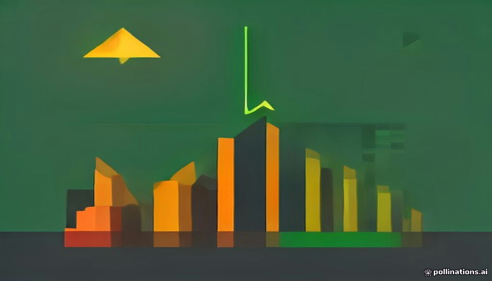
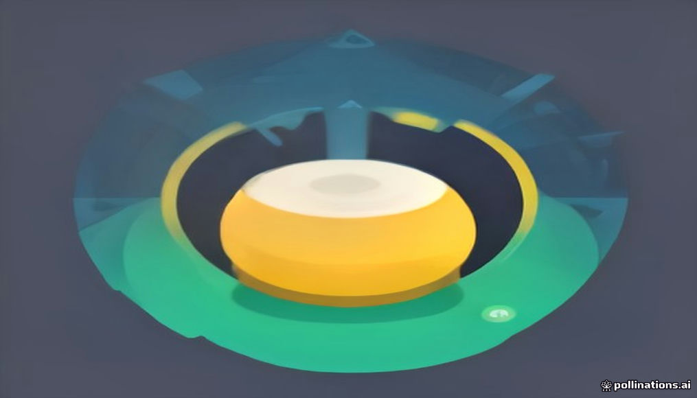

안녕하세요! 목요일 마케팅 소식 전해드립니다 😊 오늘은 TBWA 백슬래시 보고서 『Becoming Uninfluenced』가 흥미롭습니다. 응답자의 62%가 인플루언서가 되고 싶지 않다고 답했다는 결과는, 인플루언서 마케팅이 포화 상태에 이르면서 오히려 '영향받지 않는 사람'이 더 신뢰 있고 매력적으로 읽히는 시대가 왔다는 신호입니다. 팔로워 수와 협찬 게시물보다 진정성 있는 일상과 독립적인 취향이 소비자에게 더 강하게 닿고 있다면, 브랜드가 크리에이터를 고르는 기준 자체를 다시 정비해야 할 시점이기도 합니다.
헤이팝에서 소개한 곡물집의 팝업도 함께 살펴볼 만합니다. 공주에서 시작한 곡물 브랜드가 뉴욕에서 미숫가루를 선보인다는 이야기인데, K푸드의 확장이 라면·김치·과자를 넘어 전통 곡물 음료의 영역까지 이어지고 있다는 점이 흥미롭습니다. '건강'과 '낯선 맛'에 반응하는 글로벌 소비자들의 감수성을 공략하는 방식으로, 로컬 브랜드가 해외 팝업을 브랜딩의 도구로 활용하는 전략적 흐름도 읽힙니다.
오늘 하루도 좋은 인사이트로 알차게 채우세요! 🙌

12026 베스트 글로벌 브랜드, AI 투자 성과 명암 갈려
인터브랜드가 발표한 '2026 베스트 글로벌 브랜드'에 따르면 상위 100대 브랜드의 총 가치는 3조8,660억 달러로 전년 대비 8.1% 증가했다. 엔비디아는 브랜드 가치가 71% 넘게 늘어 처음으로 6위에 진입한 반면, 테슬라는 37.8% 감소하며 25위에서 50위로 밀려났다. 과거 명성에 안주한 브랜드와 신뢰·차별성을 성장 동력으로 활용한 브랜드 간 격차가 벌어지고 있어, 마케터는 브랜드 자산을 단순히 유지하는 것이 아닌 능동적으로 재구축하는 전략이 필요하다.
› 📰2TBWA 보고서 "인플루언서보다 영향받지 않는 사람이 더 매력적"
TBWA 산하 문화 인사이트 조직 백슬래시가 발표한 보고서 『Becoming Uninfluenced』에 따르면 응답자의 62%가 인플루언서가 되는 것보다 타인의 영향에 흔들리지 않는 사람이 되는 것이 더 매력적이라고 답했다. 온라인에서 형성되는 대중적 인기에 대한 불신이 높아지고 자신만의 취향을 중시하는 소비자가 늘고 있다는 분석이다. 인플루언서 마케팅에 의존해온 브랜드라면 진정성과 개성을 강조하는 방향으로 전략을 재점검할 필요가 있다.
› ▶️3유튜브 숏폼 드라마 급성장, 한국 조회수 1년 새 두 배 이상
유튜브에 따르면 올해 상반기 전 세계 숏폼 드라마 조회수는 65억 회를 넘었고 시청 시간은 전년 동기 대비 50% 이상 증가했다. TV 화면에서의 숏폼 드라마 조회수도 90% 이상 늘었으며, 한국을 포함한 아시아·태평양 지역의 증가세가 특히 가팔랐다. 숏폼 드라마가 모바일과 TV 스크린 모두에서 빠르게 확산되고 있어, 브랜드 콘텐츠 및 광고 집행 채널로서의 활용 가능성을 적극 검토할 시점이다.
› 🤖4AI 생성 저품질 사이트 2,116개 발견…프로그래매틱 광고 위협
광고 공급망 분석 기업 디크립트애즈가 생성형 AI로 콘텐츠를 대량 생산해 광고 수익을 올리는 저품질 웹사이트 2,116개를 발견했다. 해당 사이트에는 어도비·지멘스·펩시 등 유명 브랜드의 광고까지 게재된 것으로 나타났다. 프로그래매틱 광고 집행 시 브랜드 세이프티와 광고 게재 지면 품질 검증에 더욱 철저한 관리가 요구된다.
›
5피처링, 인플루언서 섭외 자동화 AI 에이전트 공개
SNS 데이터 분석 기업 피처링이 자체 콘퍼런스 '퓨처링 26'에서 인플루언서 마케팅 업무를 자동화하는 'AI 에이전트'를 공개했다. 조건을 자연어로 입력하면 AI가 참여율·채널 유형 등 기준에 맞는 크리에이터를 자동으로 찾아 제안하는 방식이다. 인플루언서 발굴과 섭외에 드는 시간과 비용을 줄일 수 있어, 인플루언서 마케팅 효율화를 고민하는 담당자에게 주목할 만한 도구다.
› 📣6광고주 23%만 "대행사가 필요한 역량 제공" 인식 격차 54%p
더드럼과 아이리서치 서비스가 발표한 보고서에 따르면 광고회사 소속 응답자의 77%는 대행사가 광고주에게 필요한 역량을 제공하고 있다고 답한 반면, 동의한 광고주는 23%에 그쳐 54%포인트의 격차가 나타났다. 광고주와 대행사 간 기대치와 실제 역량에 대한 인식이 크게 엇갈리고 있다는 것을 보여주는 수치다. 대행사는 광고주의 실질적인 니즈를 재점검하고, 광고주는 대행사에 요구하는 역할을 보다 명확히 정의할 필요가 있다.
› 📰7K뷰티 너무 잘 팔려 문제…아마존, 물류 전략 전환
아마존에서 K뷰티 매출이 2024년부터 매년 약 2배씩 성장하면서 일부 브랜드가 재고 부족으로 '빠른 배송' 배지를 잃는 상황이 발생했다. 수요 급증 속도를 물류 공급이 따라가지 못한 결과로, 아마존코리아는 내년부터 관련 전략을 변경할 계획이다. 미국 아마존에 입점한 K뷰티 브랜드라면 재고 관리와 FBA 입고 계획을 선제적으로 강화해 배송 경쟁력을 유지하는 것이 중요하다.
›

브랜드 진단부터 지금 당장 해야 할 우선순위까지,
30분 무료 상담에서 함께 정리해드려요.
이미 수십 개 브랜드가 상담받았습니다.
내 브랜드처럼, 함께 고민하는 팀원의 마음으로 봅니다.
스타트업 대표·마케팅 담당자를 위한 30분